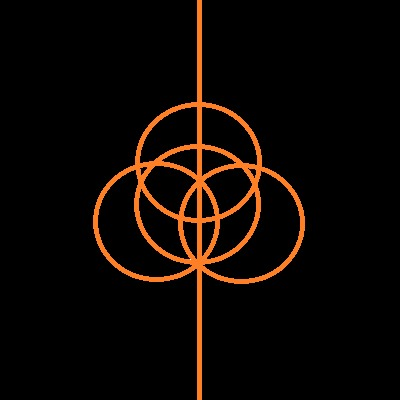

Про себе
Я студент Національного університету "Полтавська політехніка імені Юрія Кондратюка" за спеціальністю Комп’ютерні науки. Мені подобається вивчати нові технології та застосовувати їх на практиці. В навчанні я ціную наполегливість, уважність і бажання розібратися в новому.
У вільний час я люблю займатися музикою, яка допомагає відпочити й водночас розвиватися. Я вважаю, що регулярна практика допомагає впевненіше рухатися до мети.

Моє хобі
Одне з моїх захоплень — програмування. Подобається перетворювати ідеї на зрозумілі команди та бачити результат своєї роботи. Навіть невелика програма може бути корисною, якщо вона розв’язує конкретне завдання.
Під час практики я вчуся розбивати складну задачу на прості кроки, перевіряти результат і виправляти помилки.
Програмування
Наприклад, невелика програма мовою Python може привітати користувача:
name = input("Як тебе звати? ")
print(f"Привіт, {name}!")
for number in range(1, 4):
print(f"Крок {number}: продовжуй навчатися!")